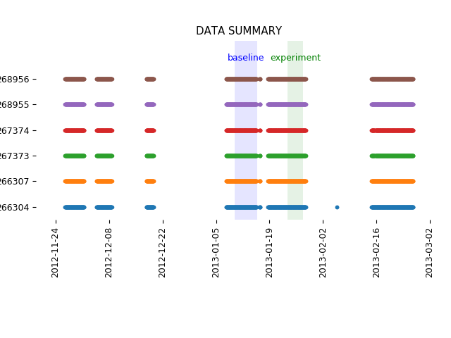
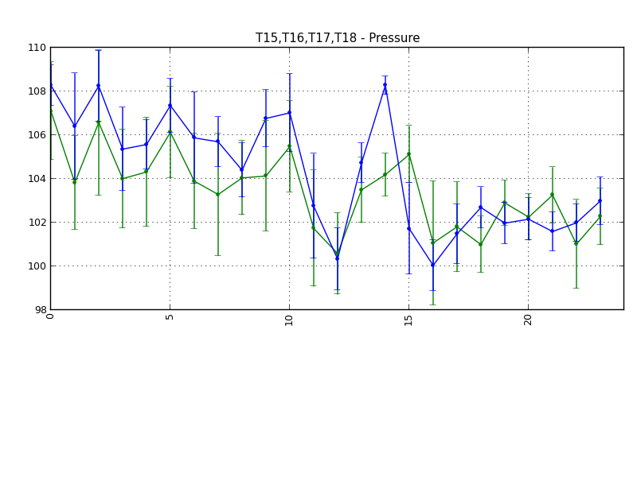
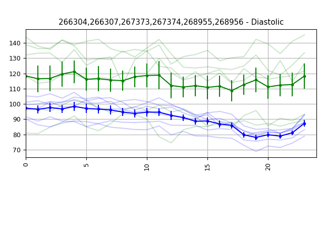

Telem-A-GatorSummary Report




Scheme Data:
# AUTOMATICALLY GENERATED SCHEME:
animals: "T15,T16,T17,T18"
baseA: "2012/05/23 19:00:00"
baseB: "2012/06/08 19:00:00"
basePoints: 24
baseSpanSec: 86400
baseT: "baseline"
baseline: True
binnum: 1
binsize: 3600
binunit: 2
expA: "2012/06/08 19:00:00"
expB: "2012/06/19 19:00:00"
expPoints: 24
expSpanSec: 86400
expT: "experiment"
features: "Diastolic,Heart Rate,Pressure"
input: "C:/Users/swharden/Desktop/telemagator/src/data-txt"
location: "C:/Users/swharden/Desktop/telemagator/src/data-npy"
output: "./output"
plotBaseline: True
plotErrorBars: True
plotExperiment: True
plotKey: 2
plotNormalized: False
plotPrimary: True
plotSecondary: False
stdev: False
sweep: True